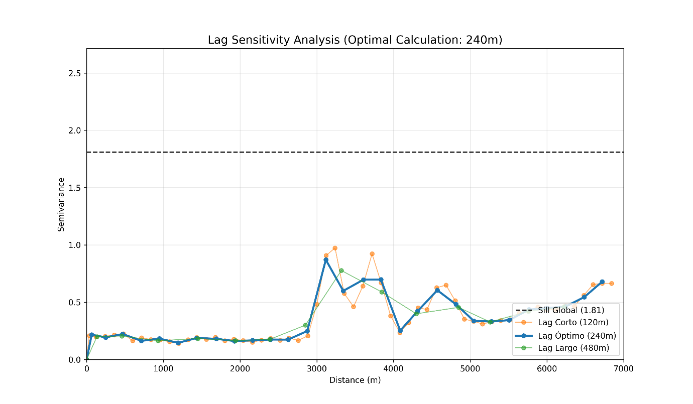
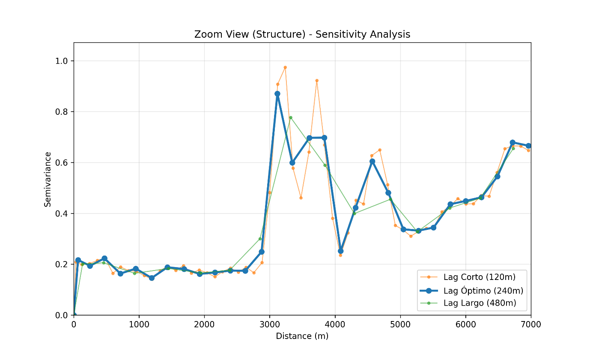
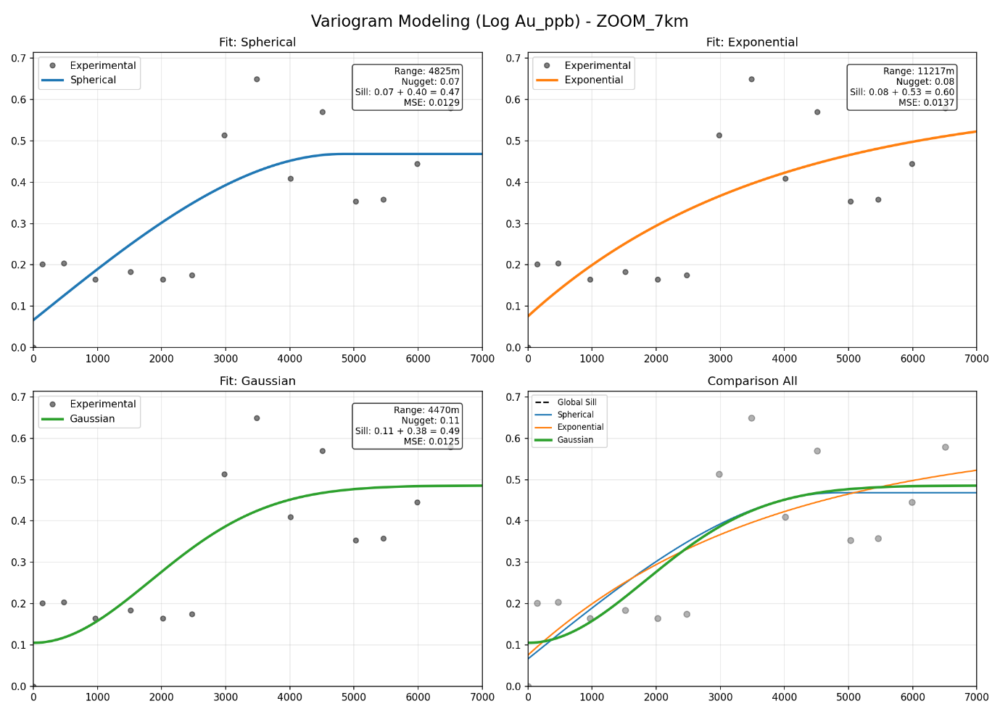
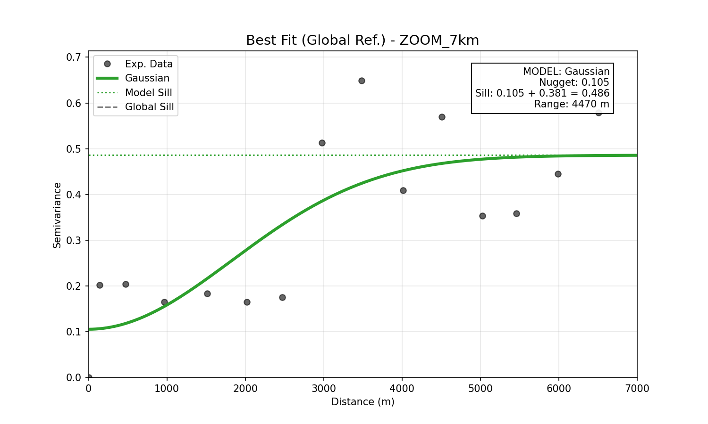
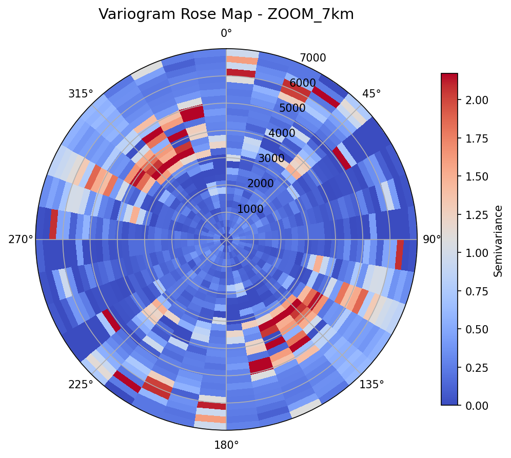
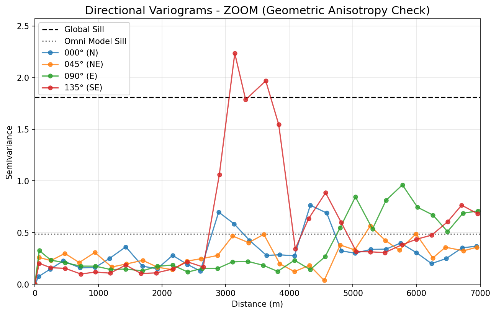

Capítulo 6 · gaussiano · alcance 4.470 m · pepita 0,105 · anisotropía 045°
La firma espacial
Del variograma experimental (lag 240 m) al modelo: continuidad máxima NE-SO y anisotropía mixta, geométrica y zonal.
Dos muestras separadas 240 metros se parecen más que dos muestras separadas 5 kilómetros. Medir exactamente cuánto, sobre las 425 muestras con oro, es construir un variograma, y este capítulo lo construye entero: el paso de 240 m, la comprobación contra la varianza global de 1,81, el modelo que mejor lo describe (gaussiano: pepita 0,105, meseta 0,486, alcance 4.470 m) y la dirección en la que el oro se parece más a sí mismo, 045°, hacia el noreste.
En este capítulo: qué mide un variograma, cómo se eligió el paso, la tendencia regional que delata la línea de 1,81, el duelo entre tres modelos, la curva del proyecto dibujada con sus propios números, y una anisotropía que resultó ser de dos tipos a la vez.
Qué mide un variograma
Toma todos los pares de muestras separados por una distancia h, más o menos. Para cada par, resta los dos valores de oro (en log10), eleva la diferencia al cuadrado y promedia sobre todos los pares; la mitad de ese promedio es la semivarianza, γ(h). Si γ es pequeña, las muestras a esa distancia se parecen; si es grande, ya no. Repite el cálculo para muchas distancias y tienes una curva, γ contra h: el variograma experimental. Es la firma espacial del depósito, y tres palabras la describen:
- Pepita: el valor de γ nada más despegar de h = 0. Dos muestras casi en el mismo sitio no son idénticas, por el error de muestreo y de análisis y por la variabilidad a una escala más fina que la del muestreo. Ese escalón inicial es la pepita.
- Meseta: el valor en el que γ deja de crecer. A partir de ahí la distancia ya no aporta información: dos muestras tan separadas son, a efectos prácticos, independientes.
- Alcance: la distancia a la que se llega a la meseta. Es el radio de influencia de una muestra, y el número que el kriging usará para decidir a quién escuchar y a quién no.
El paso: 240 metros
El variograma experimental agrupa los pares por intervalos de distancia, y el ancho de ese intervalo, el lag, es la primera perilla. Se probaron tres: 120, 240 y 480 m. Con 120 m, cada intervalo del variograma regional promedia unos 1.481 pares y la curva se llena de ruido. Con 480 m promedia 5.722 y suaviza tanto que el arranque de los primeros kilómetros se desdibuja. 240 m, con unos 2.918 pares por intervalo, fue el equilibrio: fino para ver el arranque, poblado para que cada punto sea un promedio fiable.
La línea de 1,81 y lo que delata
La varianza muestral del oro en log10 es 1,81, y en las figuras aparece como una línea horizontal, el sill global. Si el depósito fuera estacionario, es decir, si la media y la variabilidad fueran las mismas en todo el terreno, el variograma subiría hasta esa línea y se quedaría ahí. A escala regional, 25 km, hace otra cosa: se mantiene por debajo de 1,81 en un intervalo amplio y, a grandes distancias, la supera. Ese repunte final es una tendencia regional: la media del oro cambia con la posición, y los pares muy separados se diferencian más de lo que la varianza global prevé.
La respuesta fue acotar la escala. La estructura que importa para estimar vive en los primeros 7 km, y ahí es donde se ajusta el modelo; la tendencia de fondo se deja para el kriging con media local del capítulo 7, que la absorbe por construcción.
La firma, paso a paso






Los tres lags bajo la línea de 1,81. En los primeros 7 km las tres curvas cuentan la misma historia, y todas quedan muy por debajo de la varianza global: la variabilidad local es una fracción de la regional.
La estructura, de cerca. Plano alrededor de 0,2 hasta unos 2,7 km, un salto brusco hacia los 3 km y oscilaciones después: no hay una estructura, hay varias anidadas.
Tres modelos compiten. Esférico (alcance 4.825 m, error 0,0129), exponencial (alcance efectivo 11.217 m, error 0,0137) y gaussiano (error 0,0125). Se parecen mucho; uno gana por poco.
El elegido. Gaussiano con pepita 0,105, meseta 0,105 + 0,381 = 0,486 y alcance 4.470 m. Mira dónde queda la meseta: 0,486, frente a una varianza global de 1,81.
La rosa de varianzas. Cada sector es una dirección, cada anillo una distancia. Hacia el noreste, 045°, el azul se mantiene; hacia el sureste, 135°, aparecen focos rojos entre 2.500 y 3.500 m.
Las cuatro direcciones. La de 045° es la más estable y se queda bajo la meseta del modelo; la de 135° sube en picado, perfora esa meseta hacia los 2.800 m y pasa de 2,0.
La curva, dibujada con sus tres números
Leer la curva es leer el depósito. A 1.000 m el modelo da γ ≈ 0,16: dos muestras a un kilómetro todavía se parecen mucho. A 2.000 m, 0,28; hacia los 2.150 m la curva pasa por su punto medio, donde lleva recorrida la mitad de la subida. A 3.000 m, 0,39. Y a 4.470 m, 0,47: el 95 % de la meseta, que es exactamente lo que significa alcance práctico en un modelo gaussiano, porque la curva se acerca a la meseta sin tocarla nunca. A 6.000 m ya va por 0,48 y no queda nada que ganar.
Por qué el gaussiano
Los tres modelos se distinguen en cómo arrancan. El esférico sube en línea recta desde la pepita y toca la meseta de golpe, a los 4.825 m. El exponencial también arranca recto, pero se acerca a la meseta tan despacio que su alcance efectivo sale en 11.217 m: nunca termina de llegar. El gaussiano arranca en parábola, casi plano, y eso describe un depósito muy continuo a distancias cortas. En error cuadrático medio contra los puntos experimentales quedaron en 0,0129, 0,0137 y 0,0125: el gaussiano ganó, por poco.
Una meseta de 0,486 en un mundo de 1,81
La meseta del modelo es 0,486 y la varianza global es 1,81: el modelo explica poco más de la cuarta parte de la varianza total del oro. No es un defecto, es una decisión. El modelo describe la estructura local, la de los primeros 7 km, y deja fuera a propósito la tendencia regional que la línea de 1,81 delataba. Lo que el kriging hereda de aquí es un alcance práctico de unos 4,5 km: más allá, una muestra no dice nada del punto a estimar; más cerca, cuanto más cerca, más pesa.
La anisotropía: dos tipos a la vez
Hasta aquí el variograma era omnidireccional: los pares se agrupaban por distancia sin mirar hacia dónde apuntaban. Pero un depósito puede ser más continuo en una dirección que en otra, y para verlo se repite el cálculo en cuatro azimuts: 000°, 045°, 090° y 135°.
La rosa de varianzas lo enseña de un vistazo: un corredor de baja varianza hacia el noreste, y focos de alta varianza en el cuadrante sureste, entre 2.500 y 3.500 m. Los variogramas direccionales lo confirman. El de 045° es el más estable y se mantiene bajo el sill global; el de 135° sube en picado, perfora la meseta del modelo omnidireccional hacia los 2.800 m y supera 2,0.
Hay dos maneras de ser anisótropo, y aquí se dan las dos:
- Geométrica: misma meseta, distinto alcance según la dirección. Hacia el NE el oro se parece a sí mismo durante más distancia que hacia el SE; el elipsoide de continuidad está alargado NE-SO, en la dirección del rumbo regional.
- Zonal: distinta meseta según la dirección. La de 135° se estabiliza muy por encima de la de 045° y de la omnidireccional: hacia el SE no solo se pierde antes la continuidad, sino que la variabilidad total es mayor.
Una anisotropía mixta, y una advertencia concreta: un modelo omnidireccional subestima la variabilidad hacia el sureste. El kriging del capítulo siguiente estima con ese modelo omnidireccional, con la advertencia a la vista, y el alcance de 4,5 km se lee como un techo de la correlación, no como una promesa: la variabilidad local es probablemente mayor de lo que el modelo dice.
Lo que queda establecido
El oro tiene firma espacial: un gaussiano con pepita 0,105, meseta 0,486 y alcance 4.470 m, construido con paso de 240 m sobre los primeros 7 km, y una continuidad máxima hacia el noreste que la geología regional ya anunciaba. El capítulo 7 convierte esa firma en pesos: es el kriging, y se resuelve a mano antes de dejárselo a la máquina.